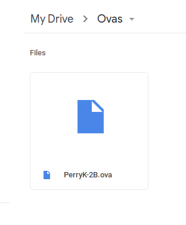
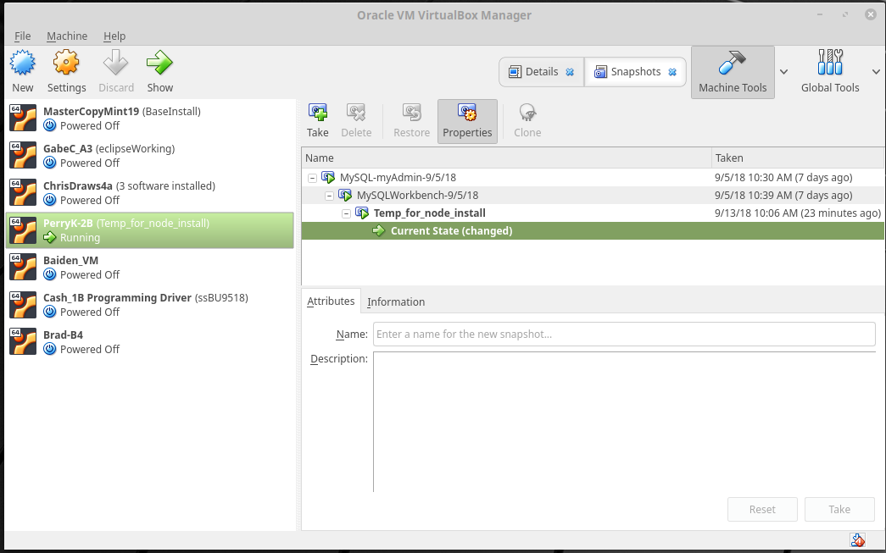
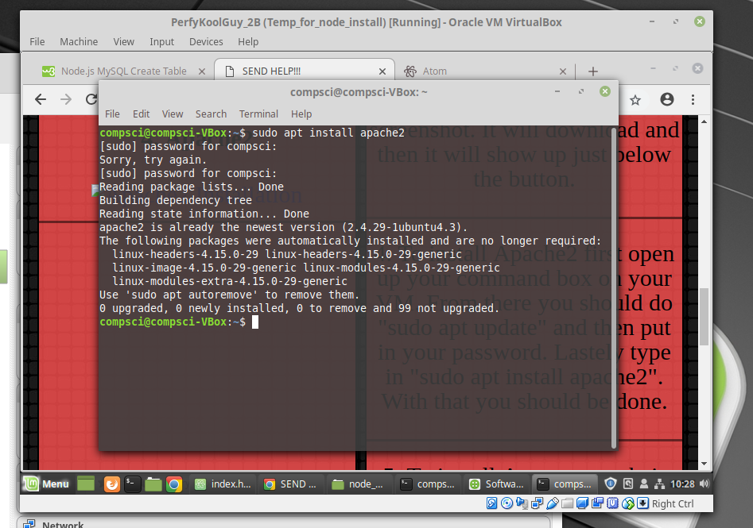
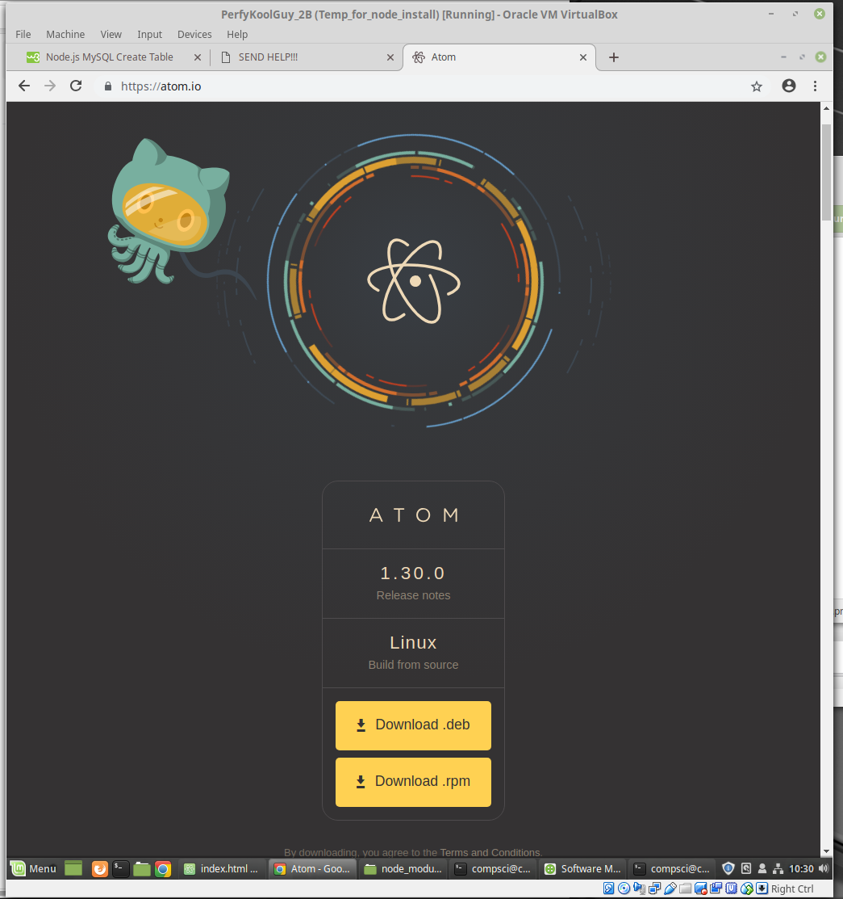
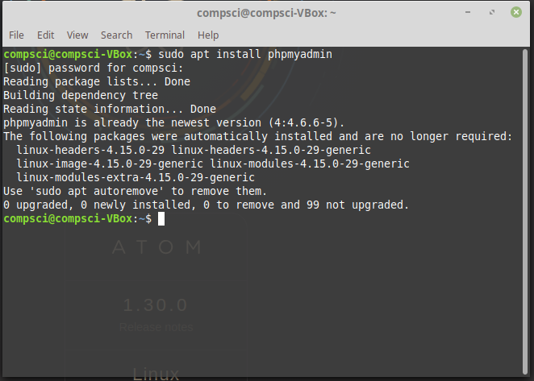
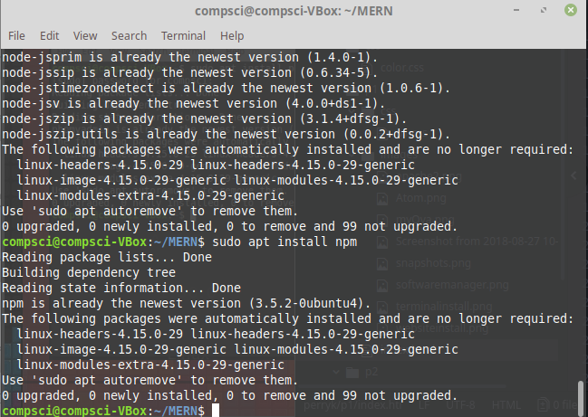

Amazing Virtual Machine
Pictures
1. Creating my Virtual Machine

2. My Virtual Machine saved offsite
3. Snapshots I have made
4. Apache2
5. Atom Installation
6. PhpmyAdmin Installation
7. Node.js + NPM install
Explanation
1. Creating a Virtual Machine is very easy. You first need to make a copy of MasterCopyMint. You can then change the name to whatever you want. With this you will have your own that you can edit however you like, customizing background, password, and add programs.
2. To export your own copy of the virtual machine, you need to go to file at the top left, export appliance, then select your VM. Once the download is finished, you can then move it to an offsite drive or onto the cloud. I moved mine to my google drive.
3. To make a snapshot go to the VM Manager, click on Snapshots at the top right next to the hammer. Make sure your VM is on before you press the Take button to make the screenshot. It will download and then it will show up just below the button.
4. To install Apache2 first open up your command box on your VM. From there you should do "sudo apt update" and then put in your password. Lastely type in "sudo apt install apache2". With that you should be done.
5. To install Atom, go to their website(https://atom.io) and click on Download.deb. Download the file and start the installation.
6. There are 3 ways to install PHPmyAdmin. The first is going onto a command window and typing in "sudo apt install phpmyadmin". This way provides one of the safest and most used ways to get it. Trick is to make sure you put a star next to the apache2 button when it pops up. The second way is to go to Software Manager and search it up to download it. This way provides the easiest way to do it. The Lastely you can go directely to their website to download the lastest version. This way provides the most updated, but most likely to break or update.
7. There is two packages you need to install when working on tables and mysql stuff. First you need to install node.js by going into your terminal and typing "sudo apt install node.js". This will make it possible to run your programs. You can find out how to make those if you click on the picture. The other thing you need to install is NPM. You can do that by typing into your terminal "sudo apt install npm".